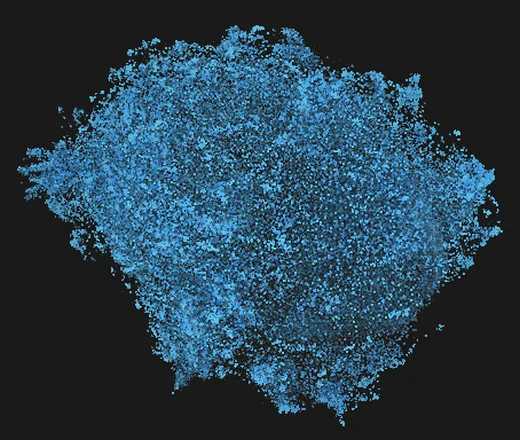

Grafting Neural Primitives Across Model Scales
A larger model’s calculation neurons, joined to a smaller model through a trained interface of 0.14% of its parameters, raise its exact arithmetic from 44.0% to 54.5%. The larger model scores 53.5%.
Replacing a lesioned groupThe 9B’s calculation group in the 4B. GSM8K, 250 problems.
Adding to an intact modelThe 4B’s calculation group beside the 2B. Exact arithmetic, 200 problems.
Qwen3.5-4B’s calculation neurons raise Qwen3.5-2B’s exact arithmetic from 44.0% to 54.5%
Lesioning a set of neurons shows that a model needs them. It does not show that the set is a unit that works anywhere else. We test that by moving the set. Neurons are taken from one model with their weights frozen and joined to a second model whose weights are also frozen, and only the interface between the two is trained. We call a set of neurons or attention heads that keeps its function through the move a primitive.
The neurons come from the Encyclopedia of LLM homologies [1], which places every MLP neuron of a model by the neurons it fires with. One group fires on equals signs and on results as they are worked out. Each Qwen model [2] we use has it: 3,948 neurons in Qwen3.5-2B, 6,857 in the 4B, 8,713 in the 9B and 22,025 in Qwen3.8-27B. We call it the calculation group.
In the main experiment the 4B’s group runs beside an intact 2B. At each layer a linear map reads the 2B’s residual stream into the 4B’s coordinates, the 4B’s neurons fire with their own weights, and a second map writes their output back (Figure 2). The write map starts at zero, so before training the model is exactly the 2B. Training changes 2,700,722 interface parameters, 0.14% of the 2B, over 1,500 steps.
Exact arithmetic is 200 five-shot problems in five families: sums and differences, expressions, products, fractions and greatest common divisors. The intact 2B solves 44.0% and the grafted 2B 54.5%, with 39 problems gained and 18 lost (McNemar p = 0.0075 [3]). The intact 4B solves 53.5% (p = 0.87 against the graft).
Two controls are trained the same way. With every weight matrix of the donor’s neurons shuffled, the graft reaches 50.0%. A LoRA [4] on the 2B’s own MLPs, with 2,752,512 trained parameters and no donor, reaches 49.5%. Neither is significantly above the intact 2B (p = 0.14 and 0.18). Against the shuffled graft, the real one gains 14 problems and loses 5 (p = 0.064).
Other text is left alone. KL from the intact 2B on general text is 0.0017 for the graft and 0.0054 for the LoRA, and HellaSwag [5] is 61.6% against 62.0% intact. GSM8K [6] goes from 70.0% to 73.0%, and to 73.4% and 71.8% under the two controls, while the 4B scores 88.4%. The calculation group carries arithmetic, and most of the 4B’s lead on word problems lies outside it.
The donor’s neurons keep their own weights and wiring, and only the interface is trained
The host has residual width dH and the donor dD. Each donor layer m runs inside one host layer h, chosen by relative depth. At that layer, with host stream xH and donor stream sD:
Δ = fD(u; α, τ), sD ← sD + Δ
xH ← xH + β (B0 + UBVBT) Δ
- Read. A0 is a ridge regression from the host’s residual stream to the donor’s, fitted on paired activations and then frozen. UAVAT is a trained low-rank correction.
- Run. fD is the donor’s neurons or attention heads with their own weights. A trained gain α and threshold τ for each neuron are the only changes to them.
- Keep the donor’s wiring. What the donor’s units write for one another accumulates in sD, in the donor’s coordinates. Connections inside the graft are therefore exactly the donor’s.
- Write. B0 is the fitted map back to the host and UBVBT its trained correction. The scale β starts at zero, so at step 0 the grafted model’s logits equal the host’s.
- Train. The loss is a KL divergence to two teachers in equal parts. On the donor’s own correct solutions to math problems the target is the donor’s next-token distribution. On general text it is the intact host’s. Only the interface receives gradients, and a checksum confirms the host’s weights are unchanged afterwards.
A graft is used in one of two ways. To add, the host is left whole. To replace, the host’s own group is first lesioned by holding each of its neurons at its mean activation, and the donor’s group stands in for it.
Table 1. The four experiments. Width is the residual width of the donor and of the host. Trained parameters are the interface, with their share of the host’s parameters.
| Donor and host | Mode | Width | Grafted | Trained parameters | Steps |
|---|---|---|---|---|---|
| Qwen3.5-9B into 4B | replace | 4,096 into 2,560 | 8,713 neurons for 6,857 | 445,490 (0.011%) | 450 |
| Qwen3.5-4B into 2B | replace | 2,560 into 2,048 | 6,857 neurons for 3,948 | 2,913,714 (0.15%) | 1,500 |
| Qwen3.5-4B into 2B | add | 2,560 into 2,048 | 6,857 neurons | 2,700,722 (0.14%) | 1,500 |
| Qwen3.8-27B into Qwen3.5-0.8B | add | 5,120 into 1,024 | 3,816 to 19,435 neurons, 16 heads | 1.97M to 5.54M (0.26% to 0.74%) | 1,600 |
In place of a lesioned group, the 9B’s neurons restore 93% of the GSM8K accuracy the lesion removed
Replacement is the stricter test of the donor’s weights, because the host has lost its own way to calculate. Lesioning the 4B’s 6,857 calculation neurons, 2.3% of its MLP neurons, takes GSM8K from 89.6% to 4.8% and exact arithmetic from 52.0% to 0.5%. HellaSwag is 72.6% before and 72.2% after.
With Qwen3.5-9B’s 8,713 neurons in their place and only the fitted maps, before any gradient step, GSM8K is 53.6%. Training 445,490 parameters on the write side, 0.011% of the 4B, brings it to 84.0%. The same interface around shuffled weights reaches 37.6% with twice the trained parameters: the graft solves 119 problems the control misses and misses 3 it solves (p = 1.1 × 10−31). Around an equal number of the 9B’s prose neurons it reaches 33.6%. Neuron surgery [7] reports every step of this experiment.
The 4B and the 9B share ancestry: a neuron of one has its closest match in the same layer of the other [1]. Qwen3.5-2B was trained separately. Lesioning its 3,948 calculation neurons takes GSM8K from 70.0% to 1.0%. The 4B’s group in their place brings it back to 47.6%, which is 68% of what the lesion removed, and exact arithmetic to 25.0% of an intact 44.0% (Figure 3).
GSM8K, 500 problems
Exact arithmetic, 200 problems
Replacing the 2B’s attention heads as well moved general text 1.7 times further from the host and did not raise accuracy
The calculation group is MLP neurons only. To move the attention that feeds it too, we lesioned the 18 attention and Gated DeltaNet heads of the 2B that are most selective for math and ran 32 heads of the 4B in the donor stream. On math the model moved closer to the 4B: KL from the 4B on its own solutions fell 35%, from 0.0335 to 0.0217. On general text it moved away from the 2B, with KL rising from 0.0388 to 0.0670. Accuracy did not improve: GSM8K is 43.6% against 47.6% (p = 0.10) and exact arithmetic 21.5% against 25.0% (p = 0.25).
The 2B has 8 query heads in a full-attention layer, and the heads that serve math also serve other text. Lesioning the 18 heads on top of the calculation group, before any graft, raises KL on general text from 0.092 to 0.227. Every later experiment therefore adds to the host and lesions nothing.
Across a 36× size gap, 7,343 neurons of Qwen3.8-27B raise Qwen3.5-0.8B’s exact arithmetic from 30.5% to 44.0%
Qwen3.8-27B has 26.90 billion text parameters, 64 layers and a residual width of 5,120. Qwen3.5-0.8B has 0.75 billion, 24 layers and a width of 1,024. Donor layer m runs inside host layer round(23m / 63), and the donor stream is 5,120 wide, so the 27B’s neurons never reach one another through the narrower host.
Full maps between widths of 5,120 and 1,024 at every layer would hold 839 million parameters, more than the 0.8B itself. We store each fitted map at rank 64, taking the approximation that is best under the covariance of the host’s activations. The maps then hold 63 million parameters, 13.3 times fewer.
Each graft trains for 1,600 steps on 1,291 of the 27B’s own correct solutions to GSM8K training problems and generated arithmetic, and on general text. The interface has 1.97 to 5.54 million parameters, 0.26% to 0.74% of the 0.8B. No test problem is in the training text.
The best graft on exact arithmetic is the Tube, 7,343 neurons of the 27B’s calculation group that the next section defines. It takes the 0.8B from 30.5% to 44.0%, with 33 problems gained and 6 lost (p = 1.4 × 10−5). A LoRA on the 0.8B’s MLPs with more trained parameters and the same objective reaches 35.0%, which is not significantly above the intact model (p = 0.19), and the Tube beats it (p = 0.0029). Qwen3.5-2B scores 43.0%. The grafted model has 0.92 billion parameters and the 2B 1.88 billion.
On GSM8K the best graft is the Gate, at 58.0% from 48.6% (p = 1.5 × 10−4). The LoRA reaches 52.8%. Word problems stay well below the larger models: the 2B scores 71.4% and the 27B 96.2%.
Every graft stays closer to the 0.8B on general text than the LoRA does. KL from the intact model is 0.011 to 0.017 for the grafts and 0.048 for the LoRA. HellaSwag is between 49.0% and 50.8% for all of them, against 49.0% intact.
Exact arithmetic, 200 problems
GSM8K, 500 problems
Bind5, 100 items
Four structures of the 27B change the 0.8B in four different ways
Tube, Cloud, Ring and Gate are four structures first described on the Qwen3.5-4B map (Figure 5). We selected each in the 27B by its rule.

Tube Cloud
Cloud Ring
Ring Gate
Gate- Tube. Neurons whose nearest neighbours by firing correlation span few directions: a local intrinsic dimension [8] under 80. In the 4B they hold 98 of the 104 neurons of its addition circuit. The graft is the 7,343 such neurons of the 27B’s calculation group.
- Cloud. Neurons with a local intrinsic dimension of 120 or more, most common in the middle layers. The graft is 10,000 of them from the 27B’s word-problem and problem-setup groups, those with the highest attribution on GSM8K training problems.
- Ring. Attention heads that copy from the context. In each of the 27B’s 16 full-attention layers we took the head whose attribution most favours answering from the context over answering from memory. The graft is those 16 heads and no MLP neuron.
- Gate. Neurons that switch the model to recall. The graft is the 3,816 MLP neurons of the 27B with the highest attribution for closed-book answers over in-context ones.
Three tests separate reading the context from recalling. Bind5 is 100 prompts that state where five people live, in invented places, and ask for one of them. Rule following is 92 prompts of six kinds: few-shot sums, copying a word list, binding, subject-verb agreement, closing brackets and continuing a series. The fact questions are 70 facts asked closed-book and 70 invented facts stated in the context and then asked. All are scored on the next token.
The Tube gives the most arithmetic and the Cloud the most multiplication. The Tube’s 44.0% is the highest exact-arithmetic score of any graft. On the 40 products the Cloud takes the 0.8B from 15.0% to 37.5% and the Tube to 35.0%.
The Ring is the only graft that keeps binding. Bind5 is 99.0% intact and 97.0% with the Ring (p = 0.62). Under the Tube, the Cloud and the Gate it falls to 84.0%, 85.0% and 79.0%, and under the LoRA to 86.0%. The Ring also has the lowest KL on general text of any arm, 0.0109, and the highest rule-following score, 95.7% against 94.6% intact. Its 16 heads still raise exact arithmetic to 38.0% (p = 0.014).
The Gate gives the most GSM8K and the least binding. Its Bind5 is 79.0%, with 20 items lost and 0 gained (p = 1.9 × 10−6). The 27B has the same profile. It answers 95.7% of the closed-book questions and 74.0% of Bind5, where the 0.8B answers 50.0% and 99.0%.
Combined, the structures do not recover binding. The composed graft holds the Tube, the Cloud, the Ring’s heads and the calculation group’s 3,816 digit-place neurons in one donor stream: 19,435 neurons and 16 heads. It scores 55.8% on GSM8K and 40.0% on exact arithmetic. On invented facts stated in the context it scores 81.4%, against 72.9% for the Tube alone (6 gained, 0 lost, p = 0.031) and 80.0% intact. Its Bind5 is 82.0%, so the Ring’s heads do not keep binding once the MLP grafts are present.
Rank-64 maps and pruning cost nothing we can measure. An unpruned graft of 101,633 neurons and 32 heads with full-rank maps has 3.36 billion parameters. It scores 53.2% and 39.5%, against 55.8% and 40.0% for the composed graft at 1.22 billion (p = 0.28 and 1.0).
Table 2. Every arm of the 27B-into-0.8B round. Parameters count the host, the donor’s frozen units, the maps and the interface. Facts are closed-book / invented in context. KL is from the intact 0.8B on general text.
| Model | Parameters | Trained | GSM8K | Exact arithmetic | Bind5 | Rule following | Facts | KL |
|---|---|---|---|---|---|---|---|---|
| Unmodified models | ||||||||
| Qwen3.5-0.8B the host | 0.75B | 0 | 48.6% | 30.5% | 99.0% | 94.6% | 50.0% / 80.0% | – |
| Qwen3.5-2B | 1.88B | 0 | 71.4% | 43.0% | 99.0% | 97.8% | 72.9% / 88.6% | – |
| Qwen3.8-27B the donor | 26.90B | 0 | 96.2% | 57.5% | 74.0% | 89.1% | 95.7% / 80.0% | – |
| Grafts of the 27B beside the 0.8B | ||||||||
| Tube 7,343 neurons | 0.92B | 4.73M | 53.2% | 44.0% | 84.0% | 93.5% | 50.0% / 72.9% | 0.0155 |
| Cloud 10,000 neurons | 0.96B | 4.74M | 53.2% | 42.5% | 85.0% | 91.3% | 51.4% / 74.3% | 0.0152 |
| Ring 16 attention heads | 0.87B | 1.97M | 51.6% | 38.0% | 97.0% | 95.7% | 54.3% / 80.0% | 0.0109 |
| Gate 3,816 neurons | 0.87B | 4.73M | 58.0% | 39.0% | 79.0% | 87.0% | 47.1% / 78.6% | 0.0167 |
| Whole calculation group 22,025 neurons | 1.15B | 4.76M | 54.2% | 39.0% | 85.0% | 93.5% | 52.9% / 80.0% | 0.0159 |
| Composed 19,435 neurons and 16 heads | 1.22B | 5.54M | 55.8% | 40.0% | 82.0% | 91.3% | 57.1% / 81.4% | 0.0164 |
| Composed, unpruned 101,633 neurons, 32 heads, full-rank maps | 3.36B | 6.49M | 53.2% | 39.5% | 81.0% | 87.0% | 55.7% / 77.1% | 0.0167 |
| Controls | ||||||||
| LoRA on the 0.8B no donor | 0.76B | 5.53M | 52.8% | 35.0% | 86.0% | 89.1% | 51.4% / 84.3% | 0.0477 |
| Composed, shuffled weights | 1.22B | 5.54M | 56.2% | 40.5% | 89.0% | 92.4% | 52.9% / 77.1% | 0.0214 |
The donor’s own weights are worth 30 to 46 points in replacement, and nothing across a 5× width gap
Each experiment has a control with the donor’s weights shuffled. Every entry of each weight matrix moves to a random position in that matrix, which keeps the distribution of the weights and destroys what was learned. The control is then trained exactly like the graft (Figure 6).
The weights matter most in replacement. They are worth 46.4 points of GSM8K for the 9B’s group in the 4B and 29.6 for the 4B’s group and heads in the 2B. Added beside an intact 2B, which still has its own calculation group, they are worth 4.5 points of exact arithmetic (p = 0.064).
Across the 5× width gap between the 27B and the 0.8B they are worth nothing. The composed graft scores 55.8% and 40.0%, and the same graft with shuffled weights 56.2% and 40.5% (p = 0.93 and 1.0). The shuffled graft is itself well above the intact 0.8B (p = 0.0014 on GSM8K and 0.0022 on exact arithmetic). At this gap the gain comes from frozen nonlinear units of the donor’s width, read and written through a trained interface, whatever their weights. Only the composed graft has this control, so the differences between the four structures may reflect the kind and number of units as much as what they learned. The real weights do keep the model closer to the host on general text, with a KL of 0.0164 against 0.0214.
A likely reason is rank. A linear read of a 1,024-wide stream reaches at most 1,024 of the 5,120 directions the 27B’s neurons were trained to read, one fifth of them. We have not tested this. A nonlinear read map is the next experiment.
Relation to model stitching, activation patching and distillation
Model stitching [9] [10] joins the first layers of one network to the last layers of another through a trained layer, and relative representations [11] do it without training. A stitched model is cut once, across the whole width. A graft joins a sparse set of units spread over every layer, 1.5% of the 27B’s parameters in the composed graft, to a host that keeps all of its own.
Activation patching and interchange interventions [12] [13] [14] copy activations from one run into another and need the source model at inference. Crosscoders [15] learn features shared between models in order to compare them. Here the rest of the donor is discarded before evaluation, and the grafted model runs alone.
The LoRA control is distillation: the host is trained on the same donor solutions with the same loss and no donor weights. The grafts above are measured against it in every round.
The three rounds cost $59 of GPU time
All runs used rented GPUs on Modal: $17.37 for the two replacement runs of the first round, $18.73 for the 4B and the 2B, and $23.11 for the 27B and the 0.8B, whose nine arms trained in parallel on nine H100s for an hour.
Limitations
- All five models are Qwen models, and the 4B, the 9B and the 27B share ancestry. No graft between labs was tried.
- Each arm is one training run. The p-values account for the test items and not for variation between runs, and they are not corrected for the number of grafts compared on each test.
- Between the 27B and the 0.8B only the composed graft has a shuffled-weights control.
- The context tests are small: 100 Bind5 items, 92 rule-following prompts and 70 facts.
- Each round ran its own baselines. The 2B scores 70.0% on GSM8K and 44.0% on exact arithmetic in the second round, and 71.4% and 43.0% in the third. The first round used 250 GSM8K problems and the later rounds 500.
- A grafted model was run as two networks joined in PyTorch at 16 bits. We have not written one as a single file or measured its speed.
References
- Encyclopedia of LLM homologies. A map of the MLP neurons of 30 language models. 2026. qwen-neuron-map.pages.dev
- Qwen3.5 and Qwen3.8. Qwen team. huggingface.co/Qwen/Qwen3.5-4B, huggingface.co/Qwen/Qwen3.8-27B
- McNemar’s test. McNemar, Note on the sampling error of the difference between correlated proportions or percentages. Psychometrika 12, 1947.
- LoRA. Hu et al., LoRA: Low-Rank Adaptation of Large Language Models. ICLR 2022. arXiv:2106.09685
- HellaSwag. Zellers et al., HellaSwag: Can a Machine Really Finish Your Sentence? ACL 2019. arXiv:1905.07830
- GSM8K. Cobbe et al., Training Verifiers to Solve Math Word Problems. 2021. arXiv:2110.14168
- Neuron surgery. The replacement experiment in full, with a film. 2026. qwen-neuron-map.pages.dev/surgery
- Local intrinsic dimension. Levina and Bickel, Maximum Likelihood Estimation of Intrinsic Dimension. NeurIPS 2004.
- Model stitching. Lenc and Vedaldi, Understanding Image Representations by Measuring Their Equivariance and Equivalence. CVPR 2015. arXiv:1411.5908
- Stitching revisited. Bansal, Nakkiran and Barak, Revisiting Model Stitching to Compare Neural Representations. NeurIPS 2021. arXiv:2106.07682
- Relative representations. Moschella et al., Relative Representations Enable Zero-Shot Latent Space Communication. ICLR 2023. arXiv:2209.15430
- Interchange interventions. Geiger et al., Causal Abstractions of Neural Networks. NeurIPS 2021. arXiv:2106.02997
- Causal tracing. Meng et al., Locating and Editing Factual Associations in GPT. NeurIPS 2022. arXiv:2202.05262
- Path patching. Wang et al., Interpretability in the Wild: a Circuit for Indirect Object Identification in GPT-2 Small. ICLR 2023. arXiv:2211.00593
- Crosscoders. Lindsey et al., Sparse Crosscoders for Cross-Layer Features and Model Diffing. Transformer Circuits Thread, 2024. transformer-circuits.pub/2024/crosscoders
Citation
@misc{boson2026grafting,
title = {Grafting Neural Primitives Across Model Scales},
author = {{Shin Megami Boson}},
year = {2026},
month = nov,
url = {https://lookatmyquant.pages.dev/grafting/}
}